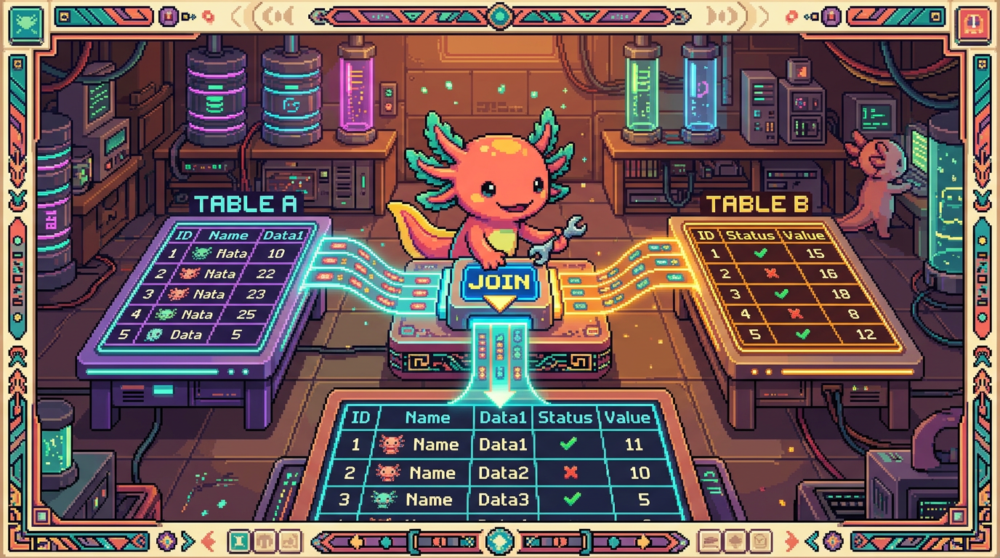

Capitulo 08 — Consultas avanzadas y JOIN a fondo

Hola otra vez, soy Bit, tu ajolote acompañante. En el capitulo anterior aprendiste a sacar filas de una sola tabla con
SELECT. Pero la vida real casi nunca cabe en una sola tabla: un habito tiene muchos registros de racha, un proyecto tiene muchas fases. ¿Como las unimos sin volvernos locos? ConJOIN. En este capitulo vamos despacito, con las tablas reales de RachaSimple (app de habitos) y Faro/Organizer (organizador de proyectos), ambas en Supabase/Postgres. Respira, mueve las branquias, y vamos.
1. Por que necesitamos unir tablas
En una base de datos relacional no guardamos todo junto. Separamos la informacion en tablas y las conectamos con referencias. En RachaSimple hay una tabla de habitos y otra de registros (cada vez que cumples el habito un dia). En Faro/Organizer hay una tabla de proyectos y otra de fases.
¿Por que no meter todo en una tabla gigante? Porque se repetiria. Si guardaras el nombre del habito en cada registro de racha, lo escribirias mil veces. Mejor: el habito vive una sola vez en su tabla, y cada registro apunta a el con su id.
🟦 ¿Que significa? — Tabla relacional
Una tabla es una rejilla de filas y columnas, como una hoja de calculo. "Relacional" significa que las tablas se conectan entre si mediante valores compartidos (un id). Sirve para no repetir datos y mantener todo ordenado. En RachaSimple,
habitosyregistrosson dos tablas que se relacionan: cada registro pertenece a un habito.🟦 ¿Que significa? — Clave foranea (foreign key)
Es una columna que guarda el
idde una fila de otra tabla, creando un puente entre ambas. Sirve para decir "este registro pertenece a este habito". En Faro/Organizer, la tablafasestiene una columnaproyecto_idque es clave foranea haciaproyectos.id: asi cada fase sabe a que proyecto pertenece.🔎 En tu codigo
En PolyPaw (Python/Flet) los datos viven en archivos JSON, sin tablas ni claves foraneas. Para relacionar una mascota con sus misiones tienes que leer el archivo y recorrerlo con codigo Python. En RachaSimple y Faro, en cambio, esa relacion la resuelve la base de datos con un
JOIN. Es la gran diferencia entre "datos en archivos" y "base de datos relacional".
2. INNER JOIN: lo que coincide en ambas tablas
Empecemos con el JOIN mas usado. Queremos traer cada registro de racha junto con el nombre de su habito.
🟦 ¿Que significa? — JOIN
JOINes la instruccion de SQL para combinar filas de dos tablas segun una condicion (normalmente que un id coincida). Sirve para responder preguntas que cruzan tablas, como "¿que registros pertenecen a este habito?". En RachaSimple lo usamos para mostrar la lista de dias cumplidos con el nombre del habito al lado.🟦 ¿Que significa? — INNER JOIN
Es el tipo de
JOINque devuelve solo las filas que tienen pareja en ambas tablas. Si un registro no tiene habito (o un habito no tiene registros), no aparece. Sirve cuando solo te interesan las coincidencias. En Faro lo usariamos para listar fases que si tienen un proyecto valido asociado.
SELECT registros.fecha, habitos.nombre
FROM registros
INNER JOIN habitos
ON registros.habito_id = habitos.id;
Vamos linea por linea, sin prisa:
FROM registros: empezamos por la tabla de registros.INNER JOIN habitos: queremos pegarle la tabla de habitos.ON registros.habito_id = habitos.id: la regla de union. Une cada registro con el habito cuyoidcoincide con suhabito_id.SELECT registros.fecha, habitos.nombre: elegimos que columnas mostrar de cada tabla.
🟦 ¿Que significa? — ON (la condicion de union)
Es la palabra que indica como se emparejan las filas de las dos tablas. Casi siempre dice "esta columna de aqui es igual a esta de alla". Sirve para que la base sepa que fila va con cual. Sin
ON, Postgres no sabe como casarregistrosconhabitos.⚠️ Cuidado
Si olvidas el
ON, Postgres puede combinar cada fila con todas las demas (un producto cartesiano). Con 100 registros y 10 habitos terminarias con 1000 filas sin sentido. Siempre pon tu condicion de union.🟦 ¿Que significa? — Producto cartesiano
Es lo que pasa cuando unes dos tablas sin una condicion
ON: cada fila de una se combina con todas las filas de la otra. Con 100 registros y 10 habitos salen 100 × 10 = 1000 filas, casi todas sin sentido. Sirve solo en casos muy raros; en el dia a dia de RachaSimple y Faro es un error a evitar poniendo siempre tuON.💡 Tip
"Inner" se traduce como "interno": piensa en la interseccion de dos circulos. Solo lo que esta en ambos a la vez. Si solo escribes
JOIN, Postgres asumeINNER JOINpor defecto.
3. Alias de tabla: escribir menos y leer mejor
Escribir registros.fecha y habitos.nombre una y otra vez cansa. Para eso existen los alias.
🟦 ¿Que significa? — Alias de tabla
Es un apodo corto que le das a una tabla dentro de la consulta. Sirve para escribir menos y para que la consulta se lea mejor, sobre todo cuando unes varias tablas. En las consultas de Faro es comodo escribir
pparaproyectosyfparafases.
SELECT r.fecha, h.nombre
FROM registros AS r
INNER JOIN habitos AS h
ON r.habito_id = h.id;
Le pusimos r a registros y h a habitos. La palabra AS es opcional: FROM registros r funciona igual. Lo mismo en Faro:
SELECT p.nombre AS proyecto, f.titulo AS fase, f.estado
FROM proyectos AS p
INNER JOIN fases AS f
ON f.proyecto_id = p.id;
Aqui tambien usamos AS para renombrar columnas en el resultado: p.nombre aparecera con el encabezado proyecto y f.titulo como fase. Mas legible para quien lee la tabla de salida.
💡 Tip
Usa alias con sentido:
ppara proyectos,fpara fases,hpara habitos. Una sola letra esta bien en consultas cortas. Si la consulta crece,projofasepueden ser mas claros.
4. LEFT JOIN: incluir tambien lo que no tiene pareja
El INNER JOIN esconde lo que no coincide. Pero a veces eso es justo lo que queremos ver: habitos que aun no tienen ningun registro (esos dias que prometiste y no cumpliste, te miro Bit). Para eso esta el LEFT JOIN.
🟦 ¿Que significa? — LEFT JOIN
Devuelve todas las filas de la tabla de la izquierda (la que va en el
FROM), y las de la derecha solo si hay coincidencia. Donde no hay pareja, las columnas de la derecha quedan enNULL. Sirve para no perder filas. En RachaSimple lo usariamos para mostrar todos los habitos, incluso los que el usuario nunca ha registrado.
SELECT h.nombre, r.fecha
FROM habitos AS h
LEFT JOIN registros AS r
ON r.habito_id = h.id;
Aqui habitos es la tabla "izquierda" (esta en el FROM). Aparecen todos los habitos. Si un habito no tiene registros, saldra con r.fecha en NULL.
🟦 ¿Que significa? — NULL
NULLsignifica "no hay valor / dato ausente". No es cero ni texto vacio: es la nada. Sirve para representar "aqui falta informacion". En unLEFT JOIN, las columnas de la tabla derecha salenNULLcuando no hubo coincidencia.
Si quisieras justamente los habitos sin registros (los abandonados), filtras por ese NULL:
SELECT h.nombre
FROM habitos AS h
LEFT JOIN registros AS r
ON r.habito_id = h.id
WHERE r.id IS NULL;
⚠️ Cuidado
Para comparar con
NULLse usaIS NULL/IS NOT NULL, nunca= NULL. EscribirWHERE r.id = NULLno da error pero nunca encuentra nada, porqueNULLno es igual a nada, ni siquiera a si mismo. Es uno de los tropiezos mas comunes.
5. RIGHT JOIN: el espejo del LEFT
🟦 ¿Que significa? — RIGHT JOIN
Es el inverso del
LEFT JOIN: devuelve todas las filas de la tabla de la derecha y las de la izquierda solo si coinciden. Sirve para lo mismo que unLEFT JOIN, pero mirando desde el otro lado. En la practica se usa poco, porque casi siempre puedes reescribirlo comoLEFT JOINcambiando el orden de las tablas.
SELECT h.nombre, r.fecha
FROM registros AS r
RIGHT JOIN habitos AS h
ON r.habito_id = h.id;
Este RIGHT JOIN hace lo mismo que el LEFT JOIN del apartado anterior: trae todos los habitos. La tabla "completa" es habitos, que ahora esta a la derecha.
💡 Tip
La mayoria de desarrolladores prefieren
LEFT JOINy casi nunca escribenRIGHT JOIN, porque es mas facil pensar "empiezo por esta tabla y le pego las demas". Si te confunde elRIGHT, dale la vuelta al orden y usaLEFT. Misma respuesta, mente mas tranquila.
6. Unir tres tablas a la vez
Los JOIN se pueden encadenar. En RachaSimple existe una tabla perfiles (un perfil por usuario). Imagina que queremos: nombre del usuario, nombre del habito y fecha del registro, todo junto.
🟦 ¿Que significa? — Encadenar JOINs
Es poner varios
JOINseguidos para combinar tres o mas tablas en una sola consulta. CadaJOINañade una tabla mas con su propia condicionON. Sirve para responder preguntas que cruzan muchas tablas. En Faro lo usariamos para traer el dueño del proyecto, el proyecto y sus fases en una sola consulta.
SELECT pe.nombre AS usuario, h.nombre AS habito, r.fecha
FROM registros AS r
INNER JOIN habitos AS h
ON r.habito_id = h.id
INNER JOIN perfiles AS pe
ON h.user_id = pe.id;
Leelo como una cadena: empiezo por registros, le pego habitos (por habito_id), y a habitos le pego perfiles (por user_id). Cada JOIN trae su ON.
⚠️ Cuidado
Cuando uses varias tablas, siempre antepon el alias a la columna (
h.nombre,pe.nombre). Sihabitosyperfilestienen ambas una columnanombrey escribes solonombre, Postgres se queja con un error de "columna ambigua" porque no sabe a cual te refieres.
7. Subconsultas: una consulta dentro de otra
A veces necesitas un resultado intermedio para usarlo dentro de otra consulta. Eso es una subconsulta.
🟦 ¿Que significa? — Subconsulta
Es una consulta
SELECTmetida dentro de otra, normalmente entre parentesis. La interna se ejecuta primero y su resultado lo usa la externa. Sirve para preguntas en dos pasos. En Faro podriamos pedir "las fases de los proyectos que estan activos" calculando primero cuales proyectos estan activos.
Ejemplo en Faro: traer las fases que pertenecen a proyectos en estado 'activo'.
SELECT f.titulo, f.estado
FROM fases AS f
WHERE f.proyecto_id IN (
SELECT p.id
FROM proyectos AS p
WHERE p.estado = 'activo'
);
La parte entre parentesis se ejecuta primero: devuelve una lista de id de proyectos activos. Luego la consulta de afuera trae las fases cuyo proyecto_id este en esa lista.
🟦 ¿Que significa? — IN
INcomprueba si un valor esta dentro de una lista de valores. Sirve para filtrar por varias opciones de una vez. Puedes darle valores fijos (WHERE estado IN ('activo','pausado')) o una subconsulta que produce la lista, como arriba en Faro.💡 Tip
Muchas subconsultas con
INse pueden reescribir comoJOINy suelen correr mas rapido. Pero la subconsulta a veces se lee mas clara ("dame las fases de proyectos activos"). Empieza por lo que entiendas mejor; la optimizacion viene despues.
8. EXISTS: ¿hay al menos uno?
Hay otra forma de preguntar "¿existe algo relacionado?": con EXISTS.
🟦 ¿Que significa? — EXISTS
EXISTSrecibe una subconsulta y devuelve verdadero si esa subconsulta produce al menos una fila. No importa cuantas, solo si hay alguna. Sirve para preguntar "¿existe relacion?". En RachaSimple lo usariamos para traer los habitos que tienen al menos un registro de racha.
SELECT h.nombre
FROM habitos AS h
WHERE EXISTS (
SELECT 1
FROM registros AS r
WHERE r.habito_id = h.id
);
Fijate que la subconsulta menciona h.id, que viene de la consulta externa. Por cada habito, Postgres revisa si existe algun registro con ese habito_id. Si lo hay, el habito pasa el filtro.
💡 Tip
El
SELECT 1de adentro es una costumbre: aEXISTSno le importa que seleccionas, solo si hay filas. Puedes ponerSELECT 1,SELECT *o lo que sea; el resultado es el mismo.SELECT 1deja claro "no me interesa el contenido, solo la existencia".🔎 En tu codigo
INvsEXISTS: ambos responden "¿hay relacion?", peroEXISTSsuele ser mejor cuando la subconsulta usa una columna de la consulta externa (comoh.idarriba), yINbrilla cuando comparas contra una lista fija o pequeña. En Faro y RachaSimple, para "¿este proyecto tiene fases?" o "¿este habito tiene registros?",EXISTSencaja muy bien.
9. DISTINCT: eliminar duplicados
Cuando unes tablas, un mismo valor puede repetirse. Si un habito tiene 30 registros y unes ambas tablas, el nombre del habito aparece 30 veces. Para quedarte con valores unicos existe DISTINCT.
🟦 ¿Que significa? — DISTINCT
Es una palabra que pones tras
SELECTpara que el resultado no repita filas iguales. Sirve para obtener la lista de valores unicos. En RachaSimple, para saber "¿de que habitos hay registros?" sin que cada nombre salga decenas de veces.
SELECT DISTINCT h.nombre
FROM registros AS r
INNER JOIN habitos AS h
ON r.habito_id = h.id;
Sin DISTINCT veriamos el nombre repetido una vez por cada registro. Con DISTINCT, cada nombre aparece una sola vez.
⚠️ Cuidado
DISTINCTmira todas las columnas delSELECTjuntas.SELECT DISTINCT h.nombre, r.fechaconsidera unica cada combinacion nombre+fecha, no solo el nombre. Si esperabas un nombre por fila y salen repetidos, casi seguro hay otra columna metiendo variedad.
10. Ordenar por varias columnas
Ya conoces ORDER BY para ordenar. Ahora: puedes ordenar por varias columnas, una como desempate de la otra.
🟦 ¿Que significa? — ORDER BY con varias columnas
Ordena el resultado por la primera columna y, cuando hay empates, usa la segunda para desempatar, luego la tercera, etc.
ASCes ascendente (de menor a mayor) yDESCdescendente. Sirve para listados ordenados con criterio fino. En Faro, ordenar fases por proyecto y, dentro de cada proyecto, por su orden.
SELECT p.nombre AS proyecto, f.titulo, f.orden
FROM proyectos AS p
INNER JOIN fases AS f
ON f.proyecto_id = p.id
ORDER BY p.nombre ASC, f.orden ASC;
Primero agrupa visualmente por nombre de proyecto (A→Z) y, dentro de cada proyecto, ordena las fases por su columna orden. En RachaSimple, registros mas recientes primero:
SELECT h.nombre, r.fecha
FROM registros AS r
INNER JOIN habitos AS h
ON r.habito_id = h.id
ORDER BY r.fecha DESC, h.nombre ASC;
💡 Tip
El orden de las columnas en
ORDER BYimporta:fecha DESC, nombre ASCno es lo mismo quenombre ASC, fecha DESC. La primera manda; las siguientes solo deciden empates.
11. LIMIT y OFFSET: paginacion
Una tabla puede tener miles de filas. No quieres traerlas todas de golpe. Aqui entran LIMIT y OFFSET, la base de la paginacion (mostrar resultados de a pocos, pagina por pagina).
🟦 ¿Que significa? — LIMIT
LIMIT nindica que quieres como maximo n filas. Sirve para no traer mas de lo necesario. En RachaSimple, para mostrar solo los ultimos 10 registros de racha en pantalla.🟦 ¿Que significa? — OFFSET
OFFSET mindica cuantas filas saltar desde el inicio antes de empezar a devolver. Combinado conLIMIT, te deja avanzar de pagina en pagina. En Faro, para la "pagina 2" de un listado de proyectos.
SELECT h.nombre, r.fecha
FROM registros AS r
INNER JOIN habitos AS h
ON r.habito_id = h.id
ORDER BY r.fecha DESC
LIMIT 10 OFFSET 0;
Eso es la pagina 1: las primeras 10 filas. Para la pagina 2, saltas 10:
... ORDER BY r.fecha DESC
LIMIT 10 OFFSET 10;
Patron general: OFFSET = (numero_de_pagina - 1) * tamaño_de_pagina. Pagina 3 con paginas de 10: OFFSET 20.
⚠️ Cuidado
Usa siempre
ORDER BYjunto conLIMIT/OFFSET. Sin un orden fijo, Postgres puede devolver las filas en cualquier orden, y "las primeras 10" cambiarian entre llamadas. Resultado: filas repetidas o saltadas al pasar de pagina. ElORDER BYancla la lista.🔎 En tu codigo
En RachaSimple y Faro muchas veces no escribes este SQL a mano: usas el cliente de Supabase desde TypeScript. La libreria traduce tus llamadas a un
SELECT ... JOIN ... LIMIT ...por debajo. Asi se ve traer un habito con sus registros:
// Cliente de Supabase en RachaSimple (TypeScript)
const { data, error } = await supabase
.from("habitos")
.select("id, nombre, registros(fecha)") // trae el habito y sus registros relacionados
.order("created_at", { ascending: false })
.range(0, 9); // equivale a LIMIT 10 OFFSET 0 (filas 0 a 9)
🟦 ¿Que significa? — Cliente de Supabase
Es una libreria de JavaScript/TypeScript que habla con tu base de datos Postgres sin que escribas SQL a mano. Tu pides datos con metodos (
.select(),.order(),.range()) y ella genera la consulta. En RachaSimple y Faro se combina con TanStack Query para guardar los resultados en cache y refrescarlos.🟦 ¿Que significa? — TanStack Query
Es una libreria que guarda en cache los datos que ya pediste y decide cuando volver a pedirlos, para no golpear la base de datos en cada pantalla. Sirve para que la app vaya rapida y muestre datos frescos sin repetir consultas. En RachaSimple y Faro envuelve las llamadas del cliente de Supabase: si dos pantallas piden los mismos habitos, la consulta viaja una sola vez.
🟦 ¿Que significa? — Cache
Es una copia temporal de datos que guardas "a mano" para reusarla sin volver a buscarla en la fuente original. Sirve para ahorrar trabajo y tiempo. En RachaSimple y Faro, TanStack Query mantiene en cache los habitos o proyectos ya cargados, asi al volver a una pantalla se ven al instante.
🔎 En tu codigo
En el
.select("id, nombre, registros(fecha)")de arriba, Supabase detecta la clave foranea entreregistrosyhabitosy arma elJOINpor ti. Por eso es tan importante que la relacion exista en la base: sin ella, no sabria como unir las tablas. Y gracias a las politicas RLS, cada usuario solo recibe sus habitos y registros, aunque tu no escribas ningun filtro de usuario.🟦 ¿Que significa? — RLS (Row Level Security)
Es una funcion de Postgres que filtra automaticamente las filas segun reglas de seguridad, normalmente "cada usuario solo ve sus propias filas". Sirve para que ningun usuario acceda a datos de otro. En RachaSimple y Faro protege habitos, registros, proyectos, fases y conexiones de usuario, incluso cuando tus consultas no mencionan al usuario.
12. Juntando todo: un proyecto con sus fases, paginado
Cerremos con una consulta que mezcla casi todo lo del capitulo, sobre Faro:
SELECT DISTINCT
p.nombre AS proyecto,
f.titulo AS fase,
f.estado
FROM proyectos AS p
LEFT JOIN fases AS f
ON f.proyecto_id = p.id
WHERE p.estado IN ('activo', 'pausado')
ORDER BY p.nombre ASC, f.titulo ASC
LIMIT 20 OFFSET 0;
Que hace, en palabras: trae proyectos activo o pausado (IN), les pega sus fases sin perder los proyectos sin fases (LEFT JOIN), sin filas duplicadas (DISTINCT), ordenado por proyecto y luego por fase, y solo las primeras 20 filas (LIMIT/OFFSET). Una sola consulta responde una pregunta muy concreta. Eso es el poder del SQL avanzado.
💡 Tip
No escribas consultas asi de golpe. Construyelas por capas: primero el
JOINsolo, mira el resultado; luego añade elWHERE, mira; luegoORDER BY; al finalLIMIT. En el editor SQL de Supabase puedes ejecutar cada version y ver como cambia. Equivocarse pronto y poco es mas facil de arreglar.
✅ Checklist — ¿ya domino esto?
- [ ] Entiendo por que separamos los datos en varias tablas y como una clave foranea las conecta.
- [ ] Se hacer un
INNER JOINcon su condicionONy explicar que solo trae coincidencias. - [ ] Puedo poner alias de tabla (
r,h,p,f) y de columna conAS. - [ ] Distingo
LEFT JOINdeINNER JOINy se que elLEFTconserva la tabla de la izquierda conNULLdonde falta pareja. - [ ] Se que
RIGHT JOINes el espejo delLEFTy que casi siempre puedo usarLEFTdandole la vuelta. - [ ] Comparo con
NULLusandoIS NULL/IS NOT NULL, nunca= NULL. - [ ] Puedo encadenar dos o tres
JOINy antepongo el alias a cada columna para evitar ambiguedad. - [ ] Se usar una subconsulta con
INy entiendo cuando convieneEXISTS. - [ ] Uso
DISTINCTpara quitar duplicados y se que mira todas las columnas delSELECT. - [ ] Ordeno por varias columnas y entiendo que la primera manda y las demas desempatan.
- [ ] Pagino con
LIMITyOFFSETy siempre acompaño conORDER BY.
🧪 Ejercicios
-
💻 En el editor SQL de Supabase (o en papel si aun no tienes acceso), escribe un
INNER JOINque traiga eltitulode cada fase junto con elnombrede su proyecto en Faro. Usa aliaspyf. -
💻 Convierte el ejercicio 1 en un
LEFT JOINpartiendo deproyectos. Despues añadeWHERE f.id IS NULLpara encontrar los proyectos sin ninguna fase. Explica con tus palabras por que apareceNULL. -
💻 En RachaSimple, escribe una consulta que traiga los
nombreunicos (conDISTINCT) de los habitos que tienen al menos un registro, usando unJOINentreregistrosyhabitos. -
Sin computadora: reescribe el ejercicio 3 usando
EXISTSen lugar deJOIN. Pista: la subconsulta debe compararr.habito_id = h.id. ¿Cual de las dos versiones te resulta mas clara? -
💻 Escribe una consulta paginada sobre los
registrosde RachaSimple: ordena porfecha DESCy trae la pagina 2 con paginas de 5 filas. ¿QueLIMITy queOFFSETnecesitas? -
Reto: en Faro, combina todo en una sola consulta — trae proyecto y fase con un
LEFT JOIN, filtra proyectos cuyoestadoesteIN ('activo','pausado'), ordena porp.nombre ASC, f.titulo ASCy limita a las primeras 10 filas. Compara tu respuesta con la consulta de la seccion 12.
¡Lo lograste! Has pasado de mirar una tabla a cruzar varias como un detective de datos. Los
JOINparecen magia al principio, pero ya viste que son solo "pega esta tabla con aquella donde los ids coincidan". Practica en el editor de Supabase, equivocate sin miedo, y nos vemos en el siguiente capitulo. — Bit 🪸